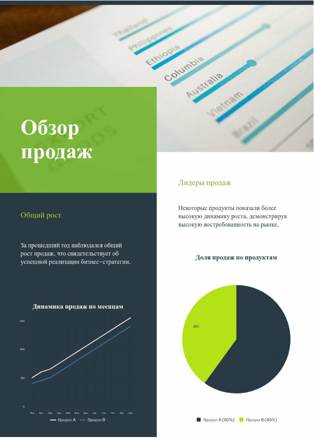
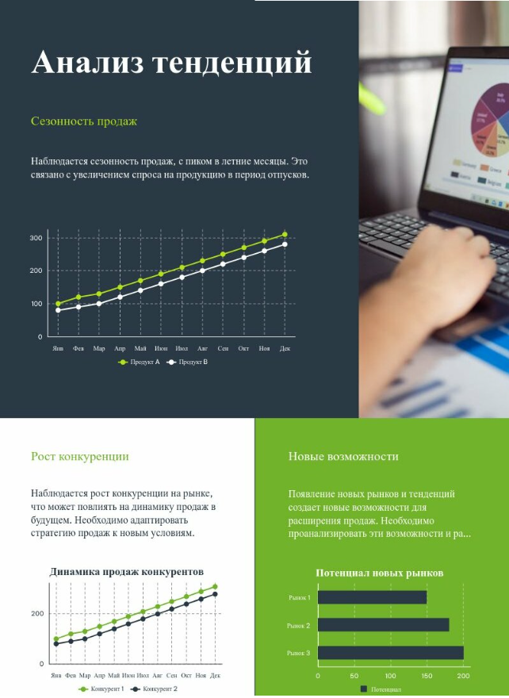
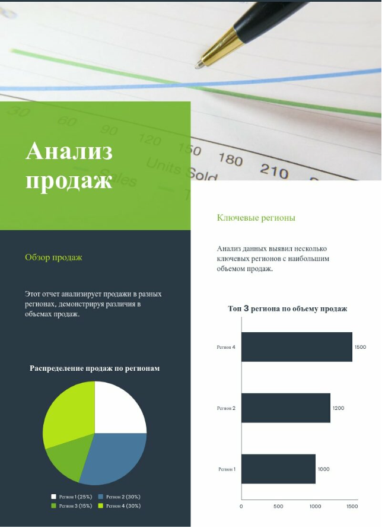

Визуализация данных — это искусство превращения сложной информации в понятные и наглядные графики, диаграммы и изображения. Хорошая визуализация помогает быстро понять суть данных, выделить ключевые моменты и сделать информацию запоминающейся. В этой статье мы разберём основы визуализации данных и дадим практические советы для создания эффективной инфографики.
Зачем нужна визуализация данных?
- Упрощение сложной информации: Графики и диаграммы помогают быстро понять большие объёмы данных.
- Привлечение внимания: Визуально привлекательная информация лучше запоминается.
- Поддержка принятия решений: Наглядные данные помогают быстрее принимать решения.
- Эффективная коммуникация: Визуализация делает информацию доступной для широкой аудитории.
Шаг 1: Определите цель и аудиторию
Перед тем как начать создавать инфографику, ответьте на два ключевых вопроса:
- Какова цель инфографики? (Например, объяснить процесс, представить данные, рассказать историю.)
- Кто ваша аудитория? (Например, студенты, бизнес-клиенты, широкая публика.)
Эти ответы помогут вам выбрать стиль, тон и уровень сложности инфографики.
Основные принципы визуализации данных
1. Определите цель
Перед тем как начать визуализацию, задайте себе вопрос: Что я хочу донести до аудитории? Цель может быть разной:
- Показать тенденции.
- Сравнить данные.
- Объяснить процесс.
- Подчеркнуть ключевые факты.
2. Выберите правильный тип визуализации
В зависимости от цели, выберите подходящий тип визуализации:
- Линейные графики: Для отображения изменений во времени.
- Столбчатые диаграммы: Для сравнения данных.
- Круговые диаграммы: Для отображения долей.
- Карты: Для визуализации географических данных.
- Инфографика: Для сочетания текста, изображений и графиков.
3. Сосредоточьтесь на ясности
- Используйте простые и понятные графики.
- Избегайте лишних элементов, которые отвлекают внимание.
- Убедитесь, что данные легко читаются.
4. Используйте цвет с умом
- Цвета должны подчёркивать важные данные, а не отвлекать.
- Используйте контрастные цвета для выделения ключевых элементов.
- Избегайте слишком ярких или несочетаемых цветов.
5. Добавьте контекст
- Используйте заголовки, подписи и пояснения, чтобы сделать данные понятными.
- Убедитесь, что аудитория понимает, что означают оси, легенды и метки.
Примеры визуализации данных
Пример 1: Линейный график
Цель: Показать рост продаж за год. По оси X — месяцы. По оси Y — объём продаж. Используйте одну линию для каждого продукта.
Пример 2: Столбчатая диаграмма
Цель: Показать долю рынка. Каждый сектор — доля компании на рынке. Используйте подписи для каждого сектора.
Пример 3: Круговая диаграмма
Цель: Сравнить продажи в разных регионах. По оси X — регионы. По оси Y — объём продаж. Используйте разные цвета для каждого продукта.
Советы для создания эффективной инфографики
Начните с плана
- Определите ключевые данные, которые хотите визуализировать.
- Создайте структуру инфографики (заголовок, введение, основная часть, заключение).
Используйте иконки и иллюстрации
- Иконки помогают сделать информацию более наглядной.
- Иллюстрации добавляют визуальной привлекательности.
Соблюдайте баланс
- Не перегружайте инфографику текстом или графиками.
- Оставьте достаточно свободного пространства.
Проверьте читаемость
- Убедитесь, что текст легко читается.
- Проверьте, что цвета не сливаются.
Инструменты для визуализации данных
- Canva: Простой инструмент для создания инфографики.
- Tableau: Мощный инструмент для анализа и визуализации данных.
- Power BI: Программа для создания интерактивных отчётов.
- Google Charts: Бесплатный инструмент для создания графиков и диаграмм.
Заключение
Визуализация данных — это не просто красивые картинки. Это способ сделать информацию понятной, привлекательной и эффективной. Следуя основным принципам и используя подходящие инструменты, вы сможете создавать инфографику, которая будет доносить ваши идеи до аудитории.
Теперь вы знаете основы визуализации данных и можете создавать эффективную инфографику. Удачи в ваших проектах!
Вернуться к статьям